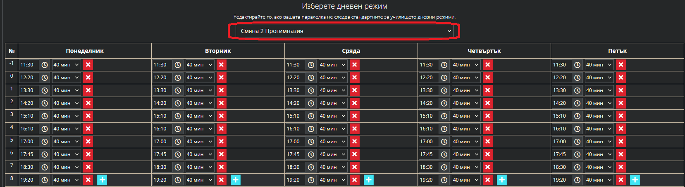

Добавяне на седмично разписание
Начална страница
Връщане към ШКОЛО
Добавяне на седмично разписание
1. Вписваме се в Школо - shkolo.bg -> Дневник
2. Избираме дневник на класа:
2.1 Добавяне на разписание
-> Дневник -> паралелка (пример 5а) -> седмично разписание ->
-> Добави
 От дата: Начало на учебен срок
До дата: Край на учебен срок
От дата: Начало на учебен срок
До дата: Край на учебен срок
 -> Запази и премини -> Режим -> Избираме подходящ режим (пр. смяна 2 Прогимназия) ->
-> Запази и премини -> Режим -> Избираме подходящ режим (пр. смяна 2 Прогимназия) ->

-> Добавяме всички предмети за всеки ден от седмицата за едната смяна -> Запази
*Внимание първо добавете първата смяна и половинка (ИУЧ през седмица) валидна за
първата седмица, която ще бъде учебна за паралелката:
- за месец септември 1 срок / февруари 2 срок
- първата половинка ще бъде четна или нечетна
- после ще редактираме втората половинка и е важно
да проверим дали първата е четна или нечетна
2.2 Добавяне на втората смяна
-> Дневник -> паралелка -> седмично разписание ->
-> Редактирай
 - Маркираме всички месеци, които ще бъдат с друга смяна, понеже само тях ще редактираме
- например 1-ва смяна, обикновено смените се променят през месец;
- размаркират се месеците за 2-ра смяна, която вече сме задали;
- маркираните остават оцветени със син цвят.
- Маркираме всички месеци, които ще бъдат с друга смяна, понеже само тях ще редактираме
- например 1-ва смяна, обикновено смените се променят през месец;
- размаркират се месеците за 2-ра смяна, която вече сме задали;
- маркираните остават оцветени със син цвят.
 -> Запази и премини -> Режим -> Избираме режим за другата смяна (пр. смяна 1 Прогимназия) ->
-> Запази и премини -> Режим -> Избираме режим за другата смяна (пр. смяна 1 Прогимназия) ->
 -> Правим промени на предметите (пр. спортни дейности), които са били преди часовете във 2-ра смяна ->
-> Сега преминават например:
- от: 0.Час (преди часовете, когато е 2-ра смяна)
- към: 8.Час (след часовете, когато е 1-ва смяна)
-> Запази
2.3 Редактиране на половинките (часовете по ИУЧ, които са през седмица - започвайки от 2-ра смяна)
-> Дневник -> паралелка -> седмично разписание ->
-> Редактирай
-> Правим промени на предметите (пр. спортни дейности), които са били преди часовете във 2-ра смяна ->
-> Сега преминават например:
- от: 0.Час (преди часовете, когато е 2-ра смяна)
- към: 8.Час (след часовете, когато е 1-ва смяна)
-> Запази
2.3 Редактиране на половинките (часовете по ИУЧ, които са през седмица - започвайки от 2-ра смяна)
-> Дневник -> паралелка -> седмично разписание ->
-> Редактирай
 Маркираме от разписанията (първо за 2-ра смяна, после за 1-ва смяна)
- седмиците, които са четни или нечетни (съответни на втората седцмица от разписанието)
Маркираме от разписанията (първо за 2-ра смяна, после за 1-ва смяна)
- седмиците, които са четни или нечетни (съответни на втората седцмица от разписанието)
 -> Запази и премини -> Режимът остава същият -> променяме:
- за всеки ден от седмицата половинките за 2-ра седмица;
- 1-вата седмица вече сме добавили в 2.1 и не е необходимо да редактираме.
-> Запази и завърши
3. Проверяваме седмичното разписание за грешки и при необходимост коригираме
Готово! Нашето седмично разписание е въведено успешно.
-> Запази и премини -> Режимът остава същият -> променяме:
- за всеки ден от седмицата половинките за 2-ра седмица;
- 1-вата седмица вече сме добавили в 2.1 и не е необходимо да редактираме.
-> Запази и завърши
3. Проверяваме седмичното разписание за грешки и при необходимост коригираме
Готово! Нашето седмично разписание е въведено успешно.
Начална страница
Връщане към ШКОЛО